Regrexit
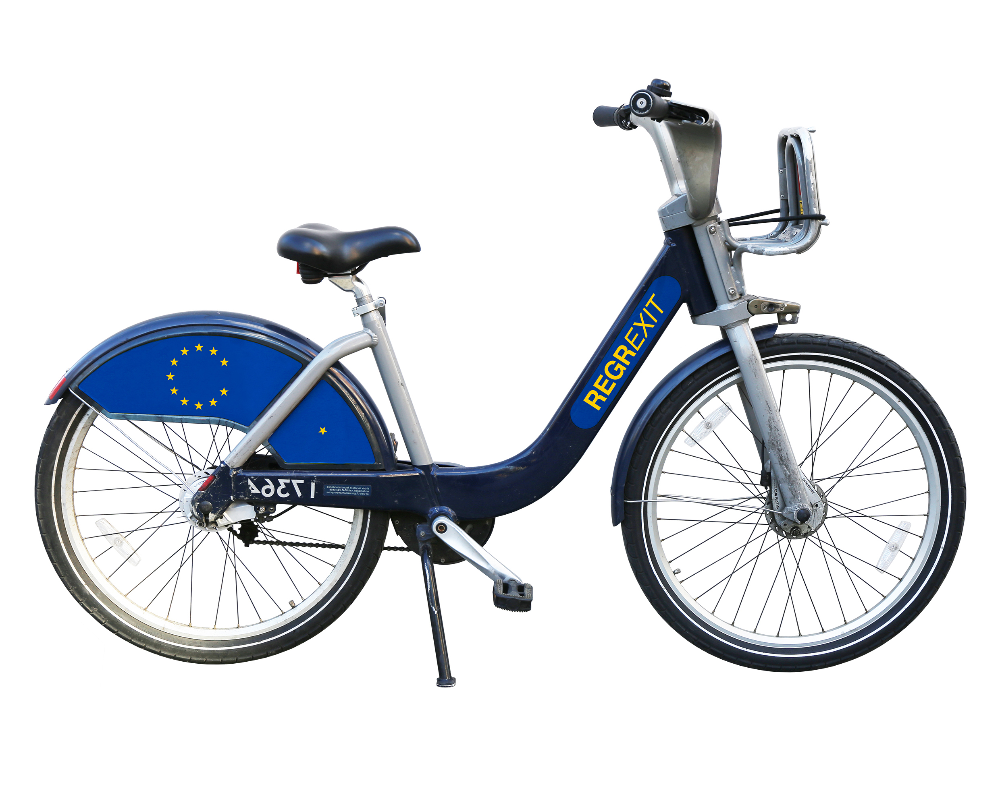 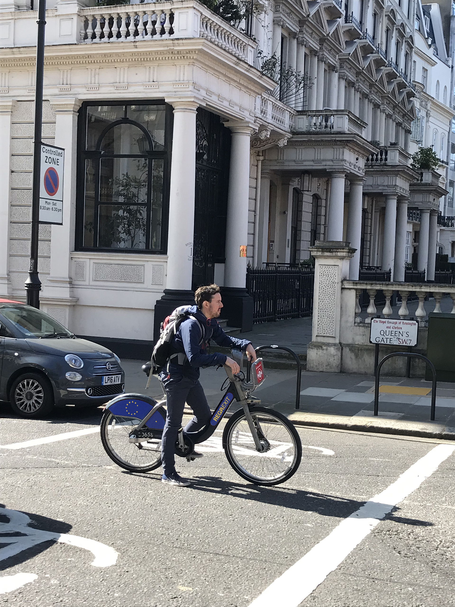
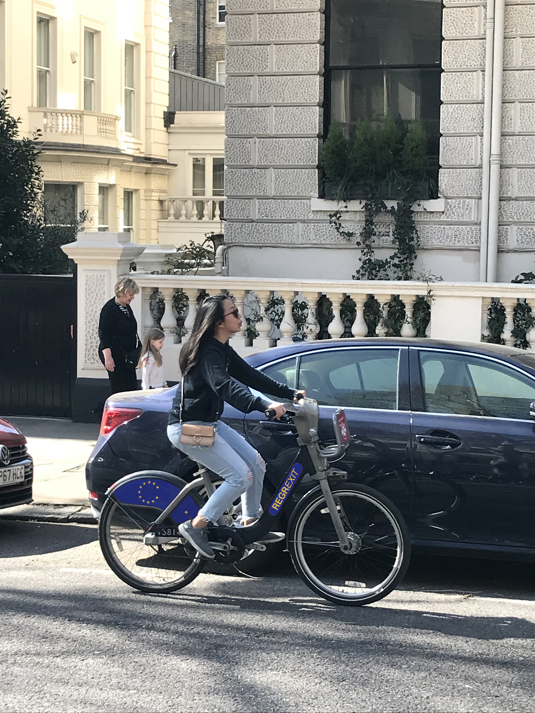
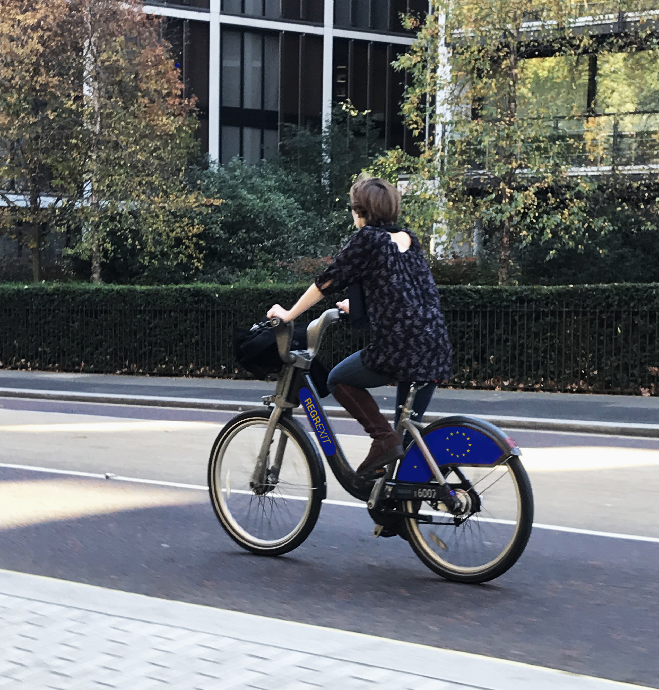
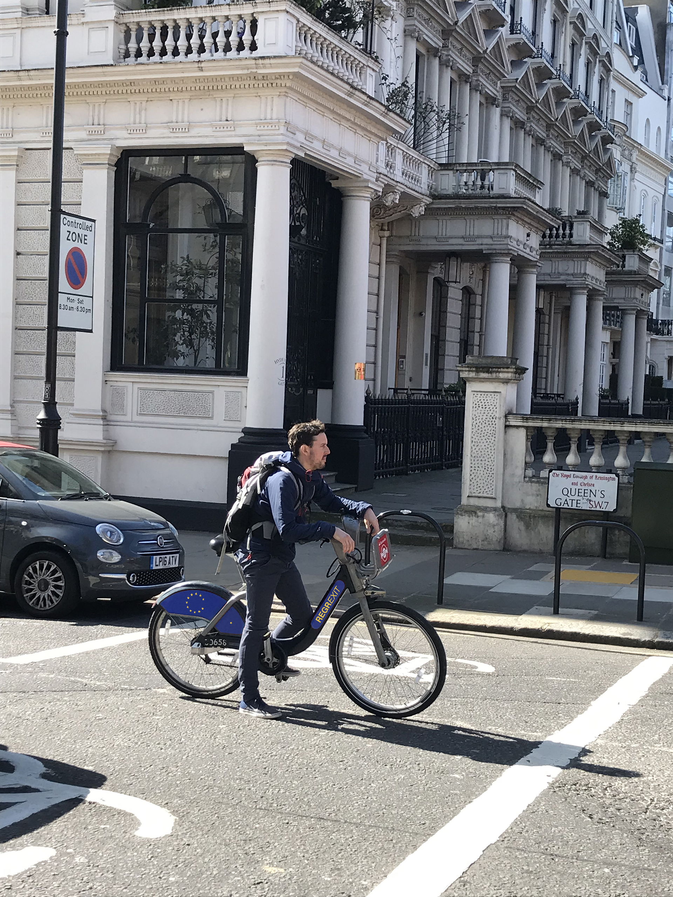
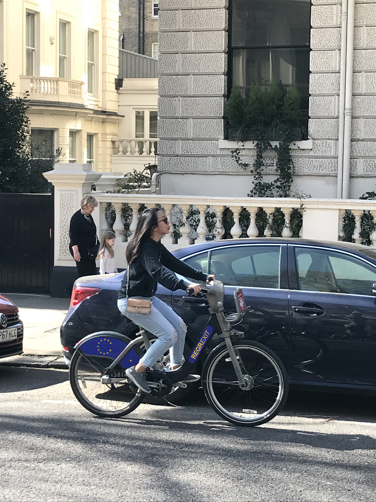
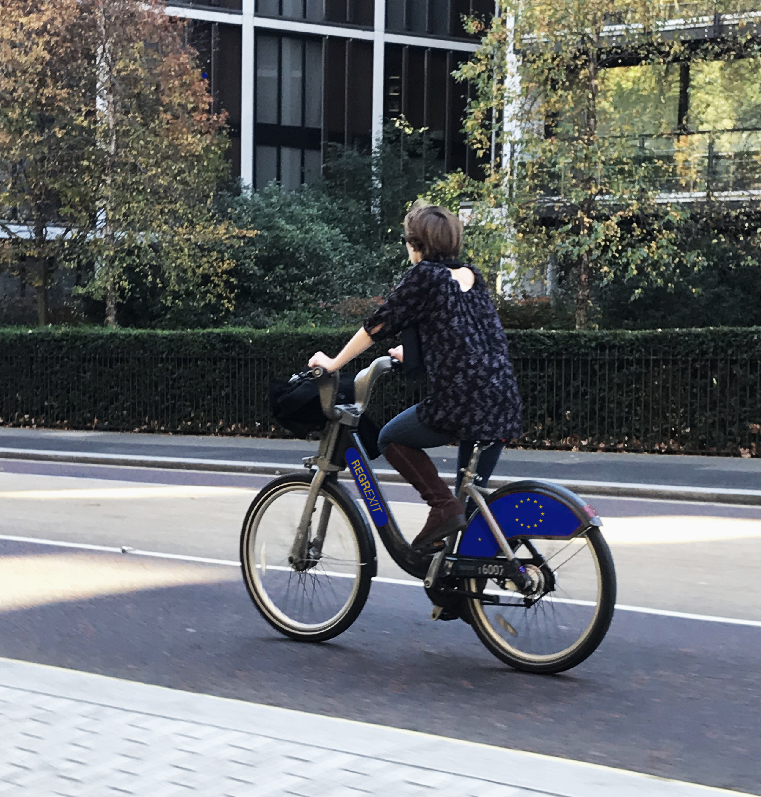
 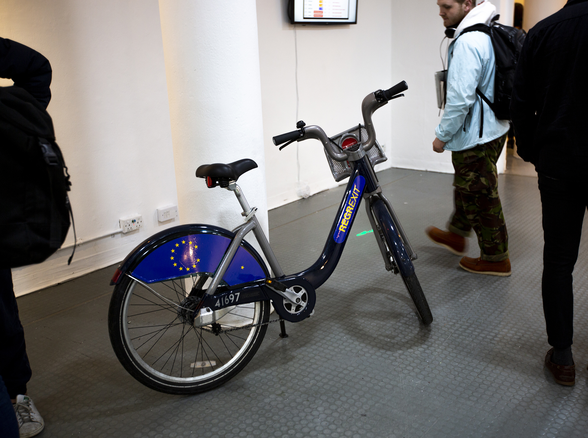
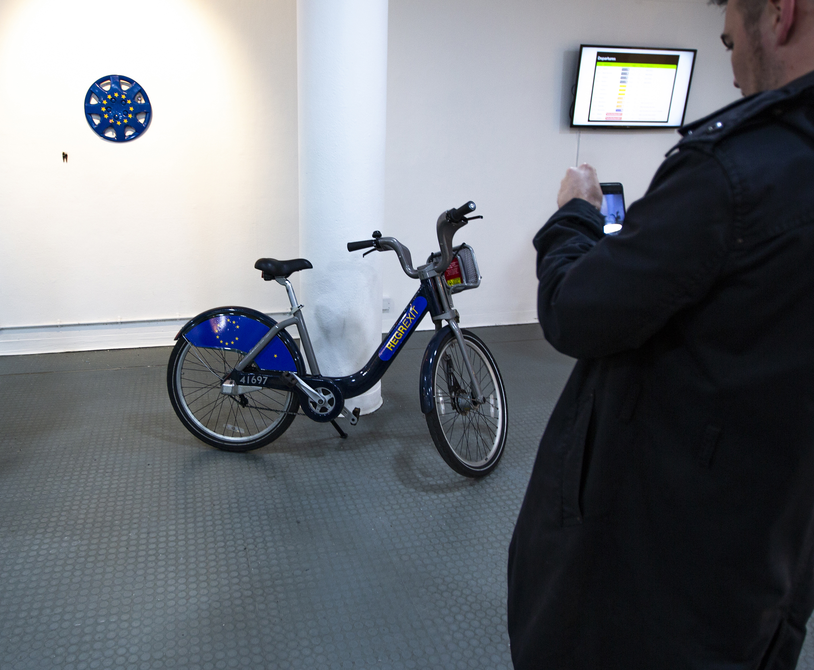
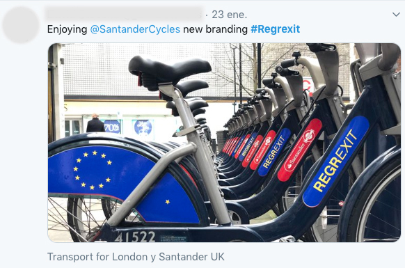
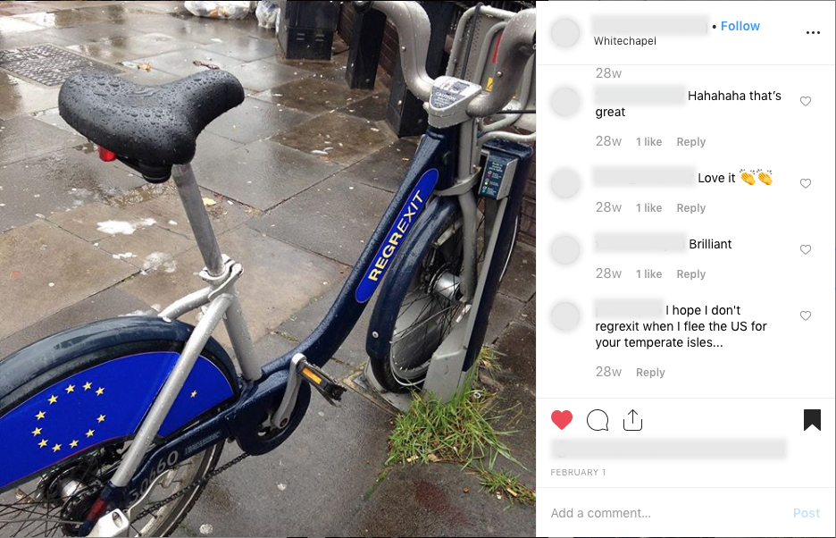
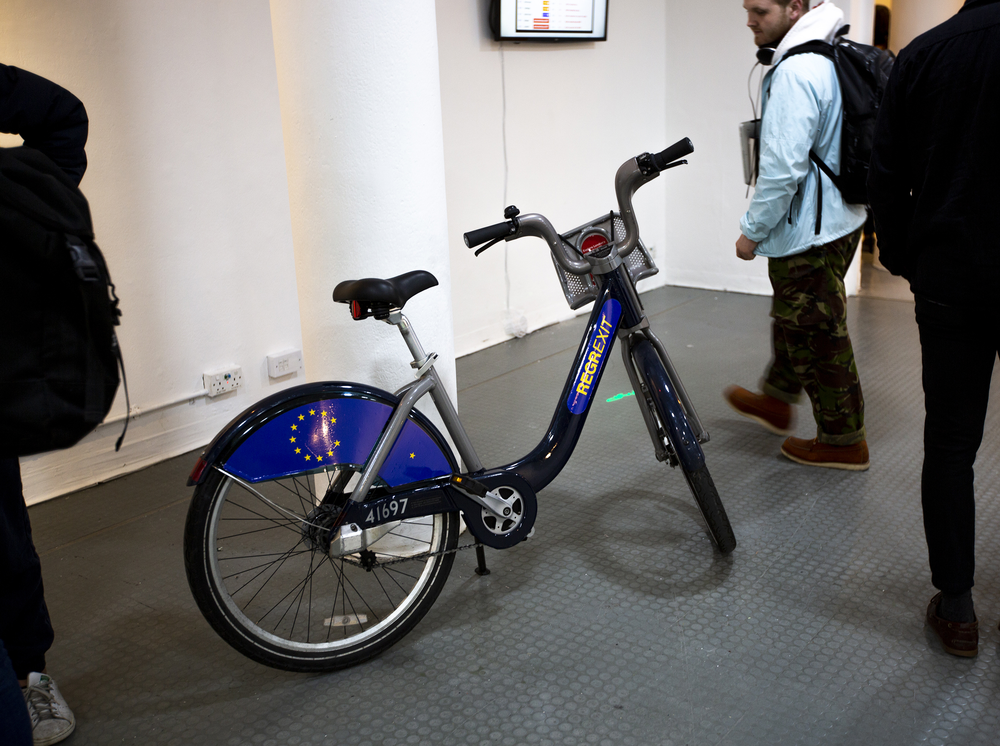
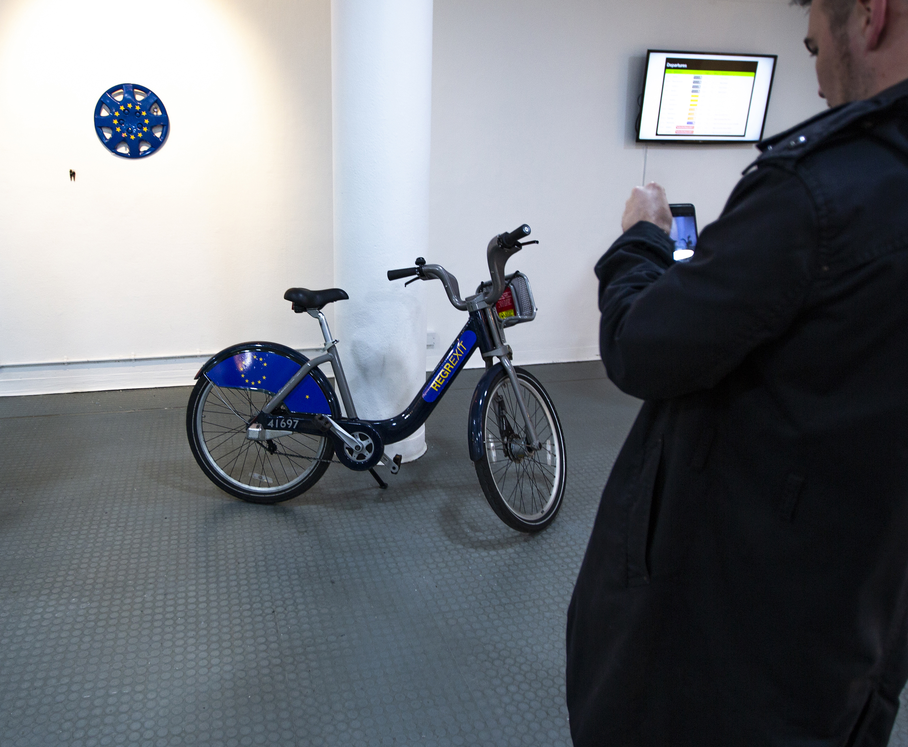
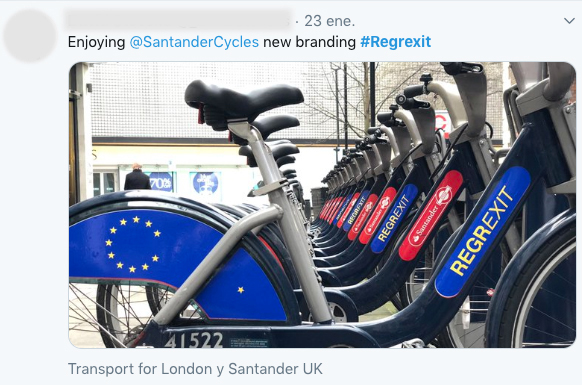
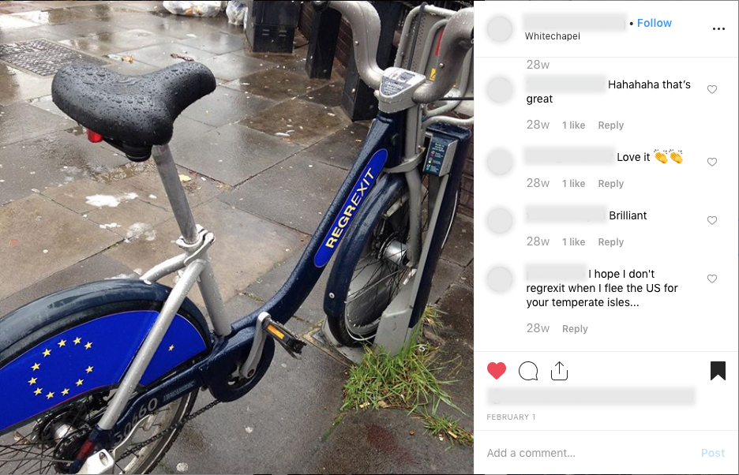
Specification of the piece:
Laser cut Sticky vinyl on Santander Bike.
Description:
This project was released two weeks before the 29th of March, before Brexit was due to leave. The stickers are designed to be on the Santander Cycle. Reasons.
1.Is a public bicycle hire scheme in London.
2.A cycle is a symbol of free-movement.
3.The scheme is sponsored by Santander (Spanish Bank) from April 2015.
4.The cycle is known as Boris Bikes since was launched by him.
5.Communication tool.